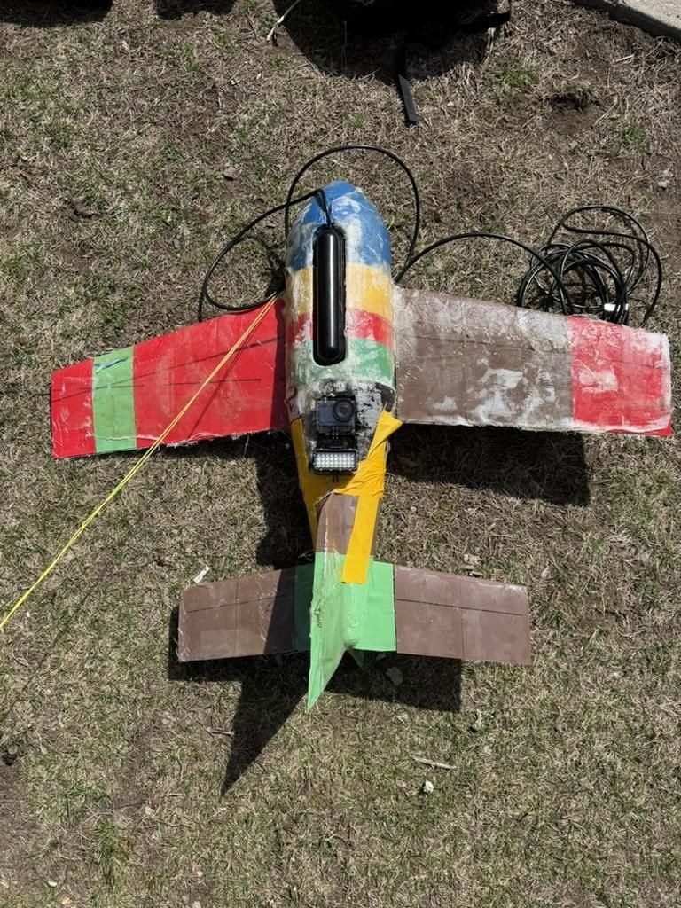
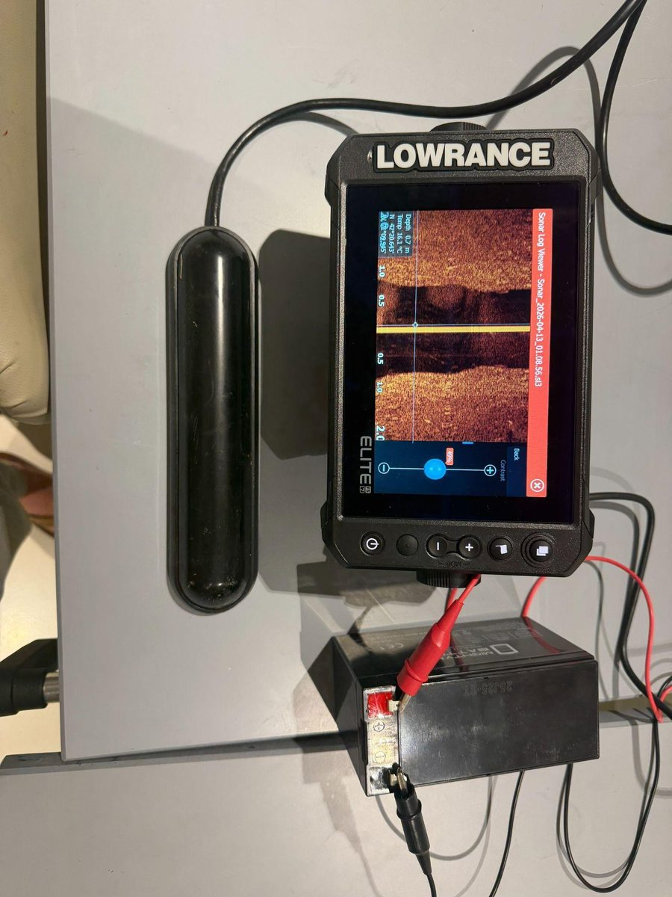

The problem
Underwater explosive ordnance affects at least 64 countries. Remotely operated vehicles and professional sonar can find it, but they are too expensive and too complex for many of the communities living next to it. The UNDP ran an open innovation challenge asking for something affordable, safe, and simple enough for non-experts to use from a small boat.
The requirements
- Under $5,000 per device, with a $3,000 goal.
- One person can run it with minimal training.
- Works fully offline, on battery power.
- No active emissions that could set off ordnance.
- Works in fresh and salt water.
What the team built
A team of five built the system. It has three parts:
- Towfish: a 3D-printed body coated in fiberglass and resin, with symmetrical airfoil wings set at a negative angle so towing pushes it down, a two-point bridle for pitch stability, and rear fins.
- Sensors: a Lowrance Elite FS side-scan sonar with GPS, plus an underwater camera with its own light.
- Software: an offline computer-vision model, fine-tuned from an open-source dataset of 1,139 labeled underwater ordnance images.

My part: integration and testing
- Sonar: I soldered the wiring between the sonar and its battery, then tested and primed the sonar for use.
- Field test: I helped design the experiment, arranged the boat and the transport to the test site, and collected the data. The towfish was towed across a lake, with weighted and 3D-printed mine and shell shapes dropped in as dummy targets.
- Build support: I helped reinforce the towfish and ordered materials.
- Team: I organized meetings and kept the team focused, and I wrote the requirements and strategy chapter of the final report.

Who it's for
Local communities and NGOs that don't have a specialist team. It is a prototype, and only the team has tested it.
Result
- The towfish submerged when towed at low speeds, as designed. Its center of mass sat below its center of buoyancy, the right setup for staying upright.
- It is positively buoyant (about 227 N of buoyancy against 58 N of weight). The wings still pulled it under, so tow speed ends up controlling depth.
- The system fits the $5,000 cap, runs offline, and one person can deploy it.
- Testing found a leak at the left wing joint, from running short of fiberglass sheeting. It caused light waterlogging and didn't affect performance.
- The detection model is a first pass. It needs much more training data, especially sonar images, before anyone should rely on it.
What I'd do next
Shrink the towfish toward neutral buoyancy to cut drag. Once it dove, the person towing it said it became very hard to row. Then add training data, including sonar, and run proper waterproofing and 12-hour runtime tests.